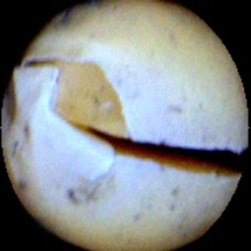
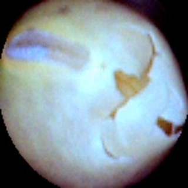
Skin-damaged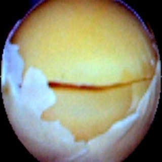
Skin-damaged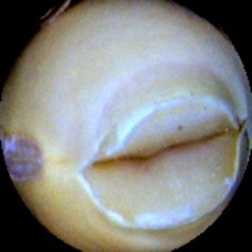
Broken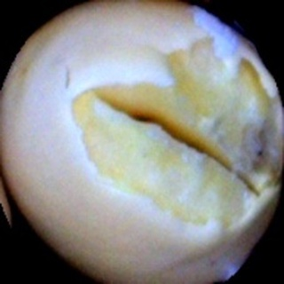
BrokenA real 2-shot query from the evaluation (Soybean Seeds). Same encoder, reference bank, prompt and VLM; only the layer used for retrieval changes.
A frozen encoder embeds the query and a labeled reference bank. The pooled output, the vector after the last block, ranks the bank, and the top K images with their labels go into the VLM prompt.
The same encoder already computes one representation per block. We rank the bank with a hidden block ℓ, so the VLM receives references of the correct class for more queries.
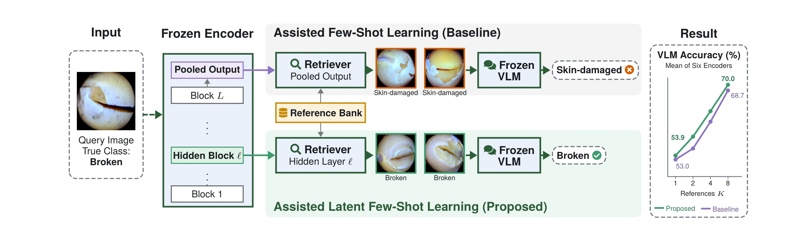
VLM accuracy (%) on 500 queries from five AgEval tasks with Claude Sonnet 5.5. Each encoder is compared only with itself. Pick a shot count.
Bars start at 45%. The block of each hidden layer is shown next to the encoder. The best layer is the best of five layers tested on the same queries, so its gain is optimistic; the paper also reports the mean of the five layers.
The proposed method is higher in 21 of 24 combinations of encoder and shot count, for encoders published from 2016 to 2025. Accuracy also rises with every added example, from 51.2% zero-shot to 71.6% at 8 shots with a hidden layer of the Qwen3-VL vision tower.
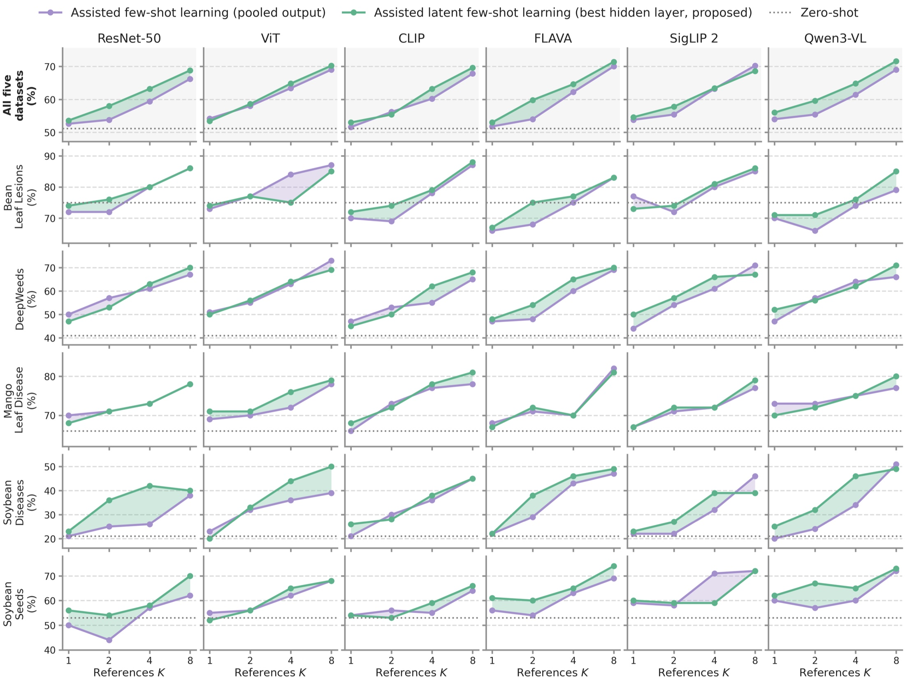
A hidden layer places a reference of the query's class in more prompts. At 1 shot, ViT block 10 raises same-class coverage from 75.0% to 82.8%; the Qwen3-VL tower and ResNet-50 gain by a similar amount.
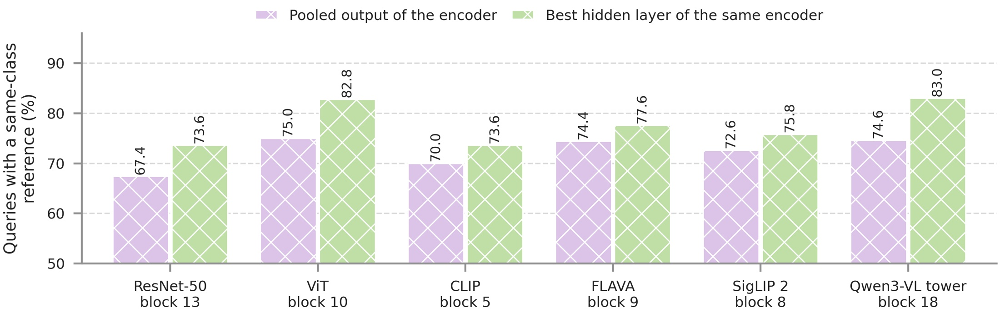
A hidden layer changes which images enter the prompt, not how many. Adding examples raises accuracy and adds tokens; switching the layer raises accuracy with no added tokens. The hidden layers come out of the same forward pass as the pooled output.
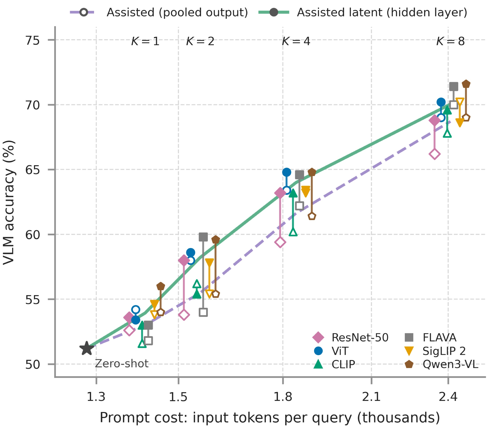
The mean of the five tested layers is above the pooled output in 16 of 24 settings, and in every setting for the Qwen3-VL tower and ResNet-50. Adjacent layers reach similar accuracy.
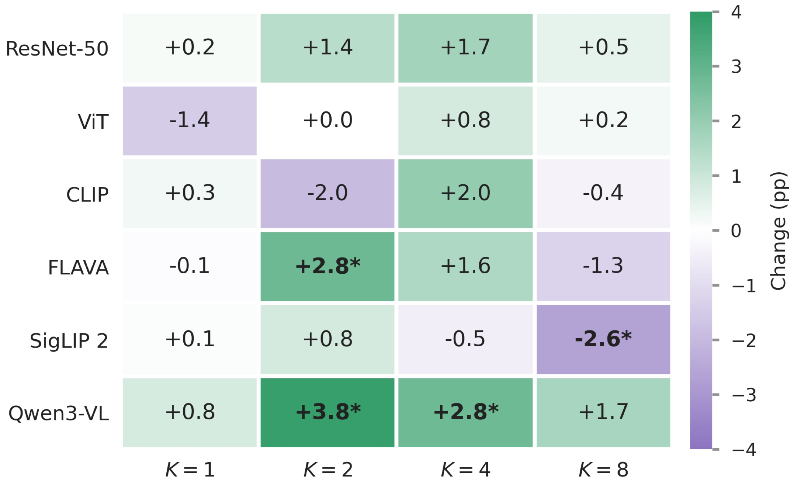
Two successes and one failure from the 2-shot run. Across the six encoders there are 14 clear cases in favor of the hidden layer and 3 in favor of the pooled output.
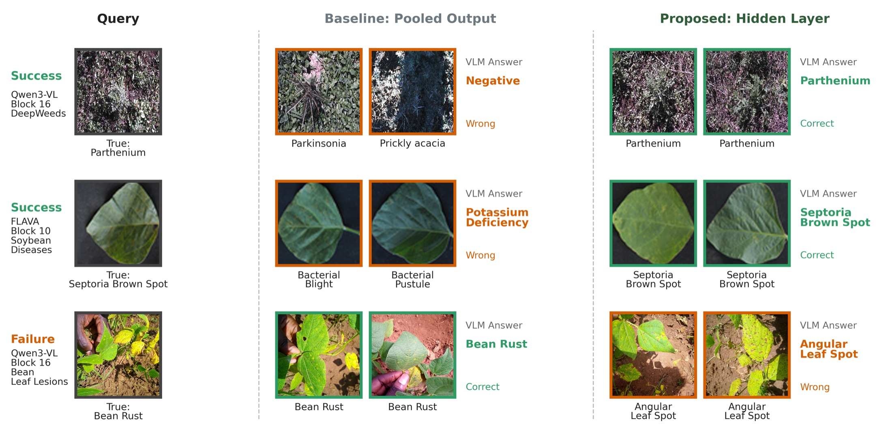
In the agricultural sector, labeled data for crop diseases and stresses are often scarce due to high annotation costs, and vision-language models (VLMs) offer a way to learn from only a few annotated examples. Assisted few-shot learning enhances these models by retrieving the most similar labeled images as few-shot examples, using the pooled output of a frozen image encoder. However, the pooled output is a default choice, and it leaves many queries without an example of the correct class. We propose Assisted Latent Few-Shot Learning, a training-free approach that retrieves the examples using a hidden layer of the same encoder, while keeping the reference bank, the prompt, and the VLM unchanged. Our method has a single hyperparameter, the block that is read, and it does not add prompt tokens. We evaluate our approach on five identification tasks of the AgEval benchmark with six frozen encoders, from ResNet-50 to the Qwen3-VL vision tower, in the 1-, 2-, 4-, and 8-shot settings, with Claude Sonnet 5.5 as the VLM. Each comparison is made within one encoder, on the same queries and the same reference bank. Experimental results demonstrate that the proposed method improves accuracy in 21 out of 24 combinations of encoder and shot count, by up to 5.8 percentage points. Accuracy also increases with the number of examples for every encoder and for both methods, from 51.2% in the zero-shot setting to 71.6% in the 8-shot setting with a hidden layer. Our analysis reveals that the improvement comes from retrieval, as a hidden layer retrieves an example of the correct class for more queries than the pooled output. Adjacent layers achieve similar accuracy, suggesting that the exact layer does not have to be found. While a single comparison remains small against the sampling error of 500 queries, the direction repeats across encoders and shot counts, highlighting the potential of hidden layers for selecting few-shot examples with limited annotated data.
Every number in the paper maps to a saved run. The runs hold each VLM request and answer, the frozen split, the cached latents and the reports.
Retrieval, layer readout for nine encoders, VLM runner, statistics and figure scripts. Built on the AgEval code.
Downloads and prepares the AgEval datasets from their public sources. Images are not redistributed.
Per-query predictions, raw VLM answers, manifests frozen before testing, latent caches and summaries.
Main text, references and appendices with the nine-encoder analysis and all statistical tests.
git clone https://github.com/tirtho149/assisted-latent-fsl && cd assisted-latent-fsl
pip install -r requirements-release.txt # Python 3.9, pinned versions of every run
./reproduce.sh # no VLM call needed
# OK per_query_predictions.csv matches the released run
# OK results_by_condition.csv matches the released run
# OK encoder_level.csv matches the released run
# OK Table 1 matches the paper
# OK all reported numbers matchThe script downloads the runs, rebuilds every prediction from the raw VLM answers, regenerates Table 1 and the main figures, and checks them against the paper. The repository README lists how to rerun each experiment from scratch, including the VLM requests.
The code builds on the AgEval benchmark and the assisted few-shot learning pipeline of Muhammad Arbab Arshad et al.
@article{roy2026assistedlatent,
title = {Assisted Latent Few-Shot Learning for Vision-Language Models
in Agricultural Stress Phenotype Identification},
author = {Roy, Tirtho and Bhattacharjee, Ushashi and
Krishnamurthy, Adarsh and Sarkar, Soumik},
year = {2026},
note = {Preprint}
}